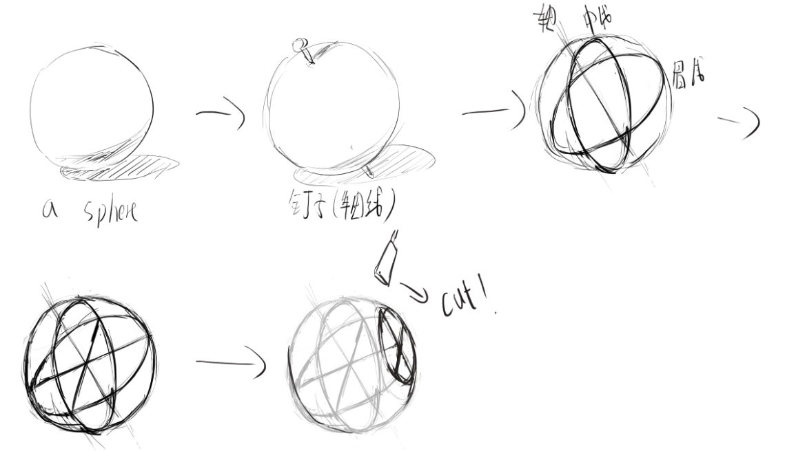
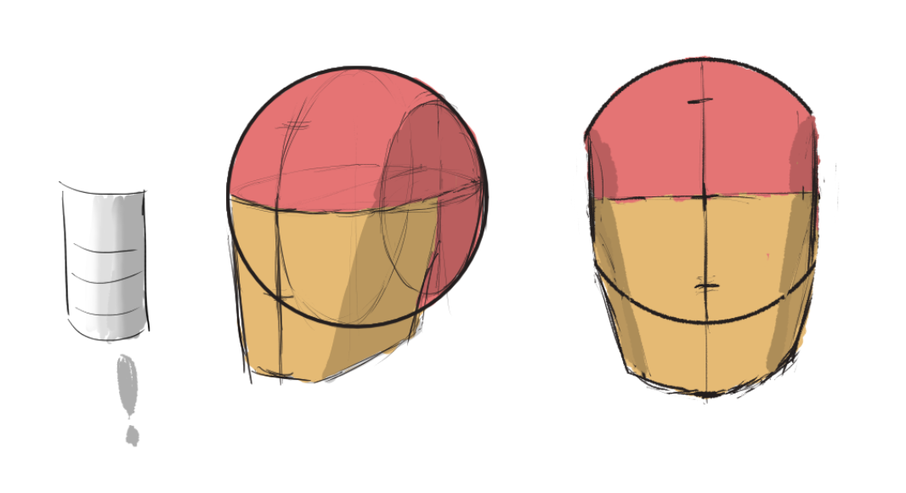
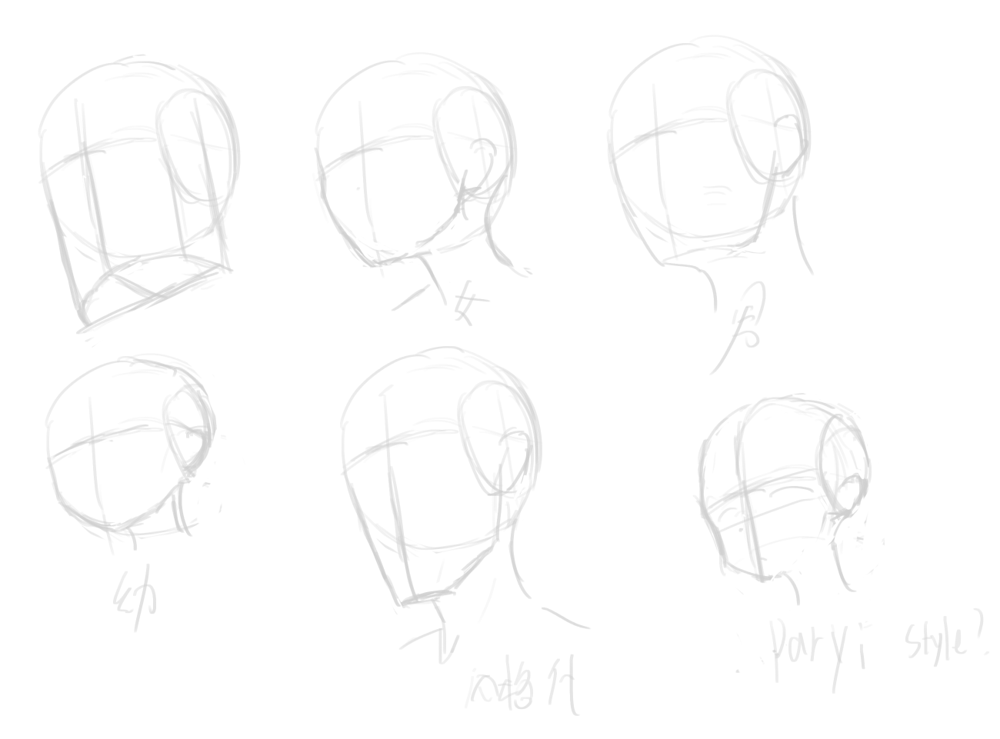
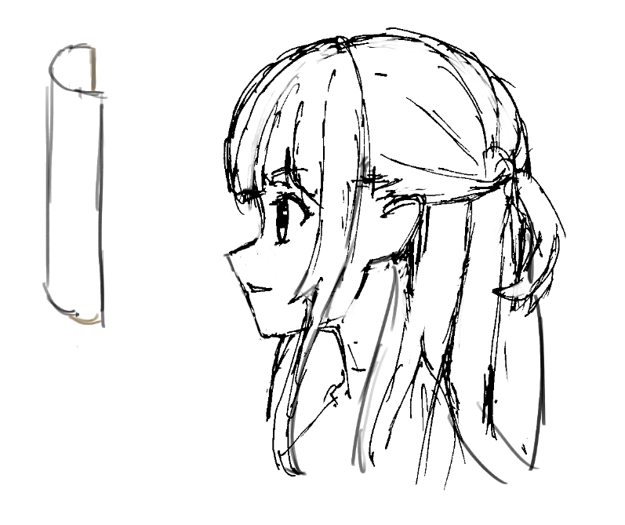
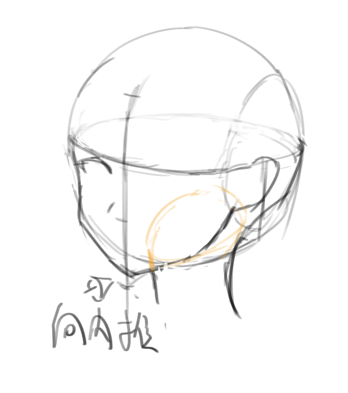
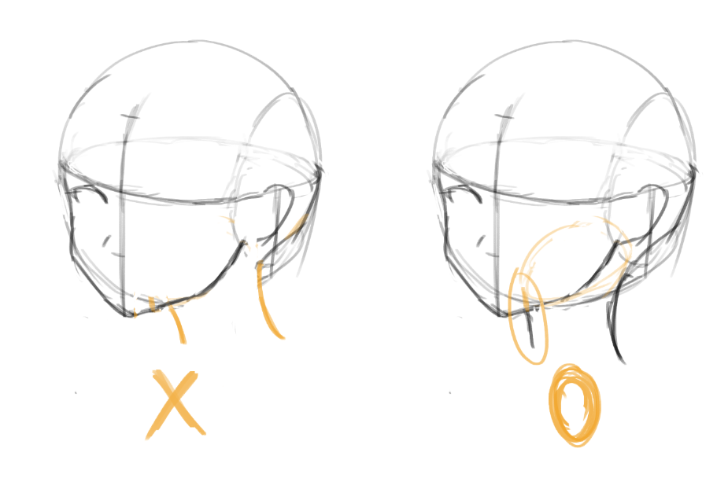
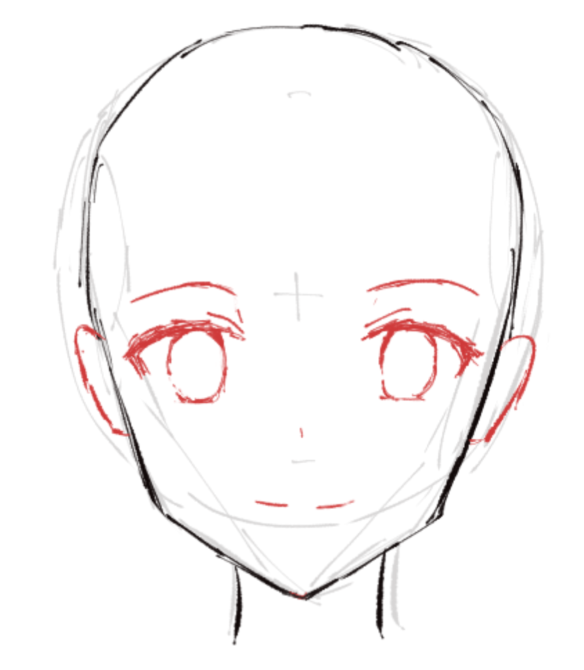

鲁米斯头研究笔记
笔记中截取图像来源于网络，如有侵权请联系我删除。
在这之后要调整思路，以系统教程为轴心，以项目学习和独自研究为辅助，我当前太过稚嫩。而且必须去找个正版教程去参加，计划是 Krenz 的透视课程。
这里的图全是自己画的，正确性次要，但至少表明这是我自己的笔记 hh。
以及，不吝啬重复，我相信后面我会重新回来处理同样的问题。
从鲁米斯的《头手素描课》开始。从写实头部（的概括形式）开始，要能够把这个概括形式熟记到脑中，在绘制二次元头像时，仍旧想着这个概括形式。
这里无暇去学更细节的解剖结构，所以主要处理概括形式。但……眼睛和嘴巴的细节结构可能得学一下，因为二次元对此进行了很大抽象（而鼻子……鼻子还好），得熟悉一下实际结构。
路米斯的概括头
头部是存在于空间中的，我们脑子里想的应当永远是三维空间的头部，而非二维形状的头部。先让头部存在于空间中（即先绘制出概括形式），再从中塑造出来整张脸。
再次强调——采取空间思维！看书中的图？要知道其中的任何结构都是立在空间中的，去想象它的凹凸，它的厚度，画自己的每一笔？要知道这一笔不是画布上的线条，而是表达特定的空间中的结构的记号。在空间中，没有所谓的“轮廓线”——它们都是特定的立体结构的边沿。
鲁米斯的概括法是球体加上一个“面具”，这个面具是圆弧形的而非是平面（虽然在进行透视的分析的时候仍旧是作为平面看待的，但需要意识到这一点——这个面具是立体的！proko 的课程中倒是有讲）。
鲁米斯反反复复强调先抓整体——五官的位置安排比画五官本身更重要；骨骼结构的细节并不重要，最重要的是整体的形状。
我们单独说“形状”的时候，指的是空间中的，三维的体积，只有说“二维形状”，才说的是画布上的东西。
概括形式，即使用球和脸部平面去对头部进行抽象。首先找到球：
- 确定轴线（即头颅的姿势），定出赤道（眉线）和本初子午线（中线）
- 找到它们的的交点（这一点即是眉心位置，即鼻子的垂直线和眉毛的水平线的交叉位置）
- 交点的方向即为头的朝向，沿此朝向，在左右两侧各切一刀，就得到头盖骨的概括形状（二次元的话可以不切）

注意这两刀切的还是有点门道的，不是平行的切，从上往下看是这么切（但这个装在脑子里就好了）：

抽象，概括。
现在，球处理完了，接下来是脸部平面。但我这里不找脸部“平面”，我找一个“面甲”，它和切后的球合并，就得到了头颅的概括形状。就像一个哨子，但注意——这里的正面不是一个平面，虽然画的看上去像！

注意这个面甲覆盖了切掉的圆的四分之一，注意这个面甲的正视图下，仍旧是能看到侧面的，还是那个原因——面甲是曲面，而且上面切球的时候是向外切的。
考虑到这个面甲既考虑为平面又考虑为曲面，因此头颅的透视既可以使用立方体去思考也可以用圆柱体去思考，后者实际上是更细化的，想象面甲如同正对着看圆柱体，其中切掉下部的一部分以匹配下颌形状。但使用立方体去思考的话，能够利用到透视学中的既有结论（但……一般不会考虑那种花哨操作，一般即使画多个人，每个人也基本上都认为是正对着镜头去画的。
当然，也可以以蛋形（椭球体）为心智模型。
看看正侧面（同样地，不要以为这是一个平面，想象面甲部分是部分切下来的圆柱体）：

鲁米斯的概括头，正侧面看来，正面是垂直的，但这个其实在不同人上也是有差异的，有人额头前突，有人下巴后收或前突（像猿类）。而在风格化的时候，特别是画二次元女孩的时候，正面通常不垂直，鼻子会画得很高，线条更加圆润，鼻尖到下巴会有一条很有趣的线，下巴稍微比额头更向内收。但这同样只是……看画风。
鼻尖到下颌的线条称为 E-Line（Esthetic Line，美观线）。
风格化头部
（我主要是指二次元女孩头部）
概括头是一个一般的头，实际上它哪里都能变：
- 球的形状，可以给它压扁，变方，更宽更窄（即改变切的形状，这里有个方法论说是，想象头是橡皮泥，改变形状，体积不变，但这个在风格化头部中似乎没啥太大意义）
- 面甲的形状，是更圆一些，还是更长一些，更宽一些，更楞次分明一些……
- 然后在五官上，五官的形状，比例，是否满足三庭……
但无论如何，唯有一点是永远确定的——球和面甲都是三维的形状，三维的形状要用三维的思考。

少女头

下颚缩小，下颌骨线条柔软。注意头顶似乎得画的更扁一些才能把头发画好看？似乎其实也不必，好像感觉头扁是刘海和后发的厚度带来的幻觉。


注意黄色线条标识的脖子和头颅的连接处（全凭感觉画的！），靠下颌的脖子部分实际上有一部分是不可见的。

关于正面，注意头部最宽的地方，在概括头中，头部最宽的地方为眉骨处，但实际上（我的），以及少女头的正面，最宽处稍微比眉毛高一些，但只是高一点儿。


and，let’s 练习，画点 turnaround！
画的时候意识到，画头的球的时候，实际上总是没有任何畸变的，这也就是说，总是假设头在画面正中心，或者镜头是长焦的（即镜头较远），不然头部肯定会有明显的透视感。当前只能说是意识到这个问题，因为实际画的时候，只有画大 FOV 的场景的时候，才会真正反映出来这个问题。但即使是大畸变的场景，这个问题仍旧较少反映出来，因为头太小了，除非它在画面中占据大量比例又在画面边缘，才会有明显反映，但偏偏没人会这么构图，真这么构图的，那基本上都是在画鱼眼透视。
在 Blender 中研究人像的透视的时候，把焦距改到 80mm 会很合人像作品中看到的样子。
人像的透视的特殊性会带来什么呢？这带来几件事情：
- 眉线和下巴线和鼻底线，基本总是近似平行的，即使平视也是如此
- 因为镜头较远，远离镜头的眼睛和靠近镜头的眼睛的大小基本相同
- 眉线和耳朵顶部的相对关系仍旧起作用——人物低头时耳朵高，抬头时眉毛高，正视时一样高。
需要研究一下网上能找到的作品来验证这一点。
本博客所有文章除特别声明外，均采用 CC BY-NC-SA 4.0 协议 ，转载请注明出处！